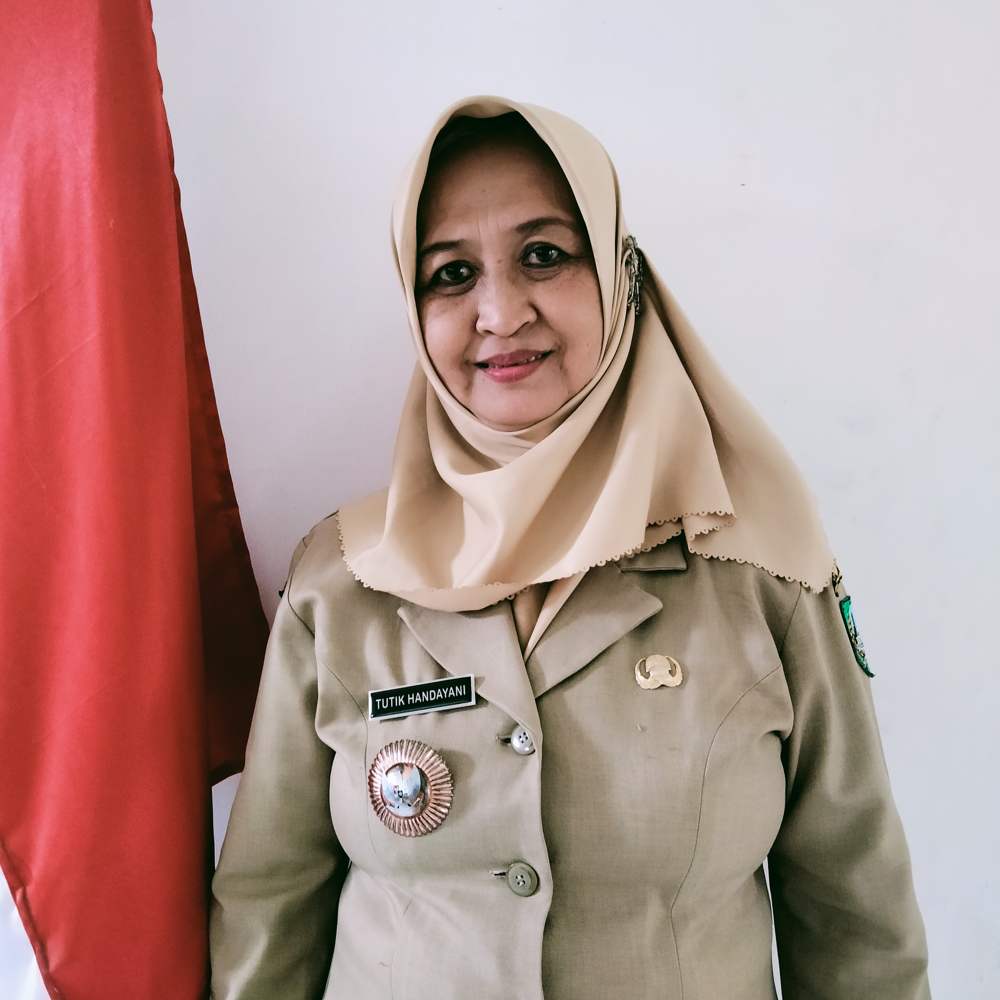
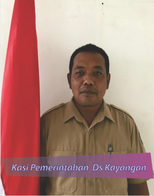
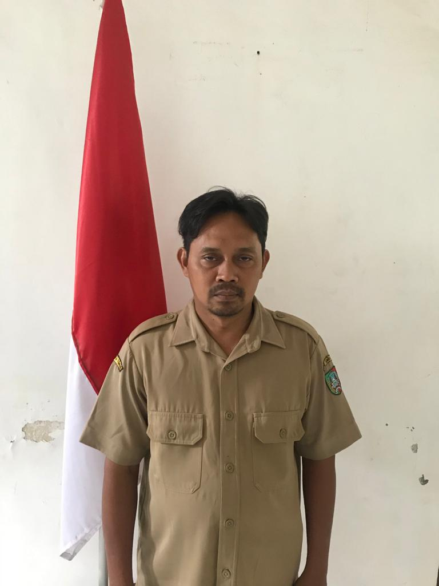

Bagan Pemerintah Desa Kayangan

Tutik Handayani
Kepala Desa
Agus Suprayitno,A.Md
Sekretaris Desa

Kusrianto
Kepala Seksi Pemerintahan

A. Khisabul Khaq, S.PdI
Kepala Seksi Kesejahteraan

Ali Mukson
Kaur Tata Usaha dan Umum
Mulyono
Kaur Keuangan
Achmad Fauzi, ST
Kaur Perencanaan
Kasmuji
Kasun Kayangan
Moh. Ibrahim
Kasun Kayen
Imam Budiono
Kasun Tebon
Yakop, S.Pd
Kasun Kasun